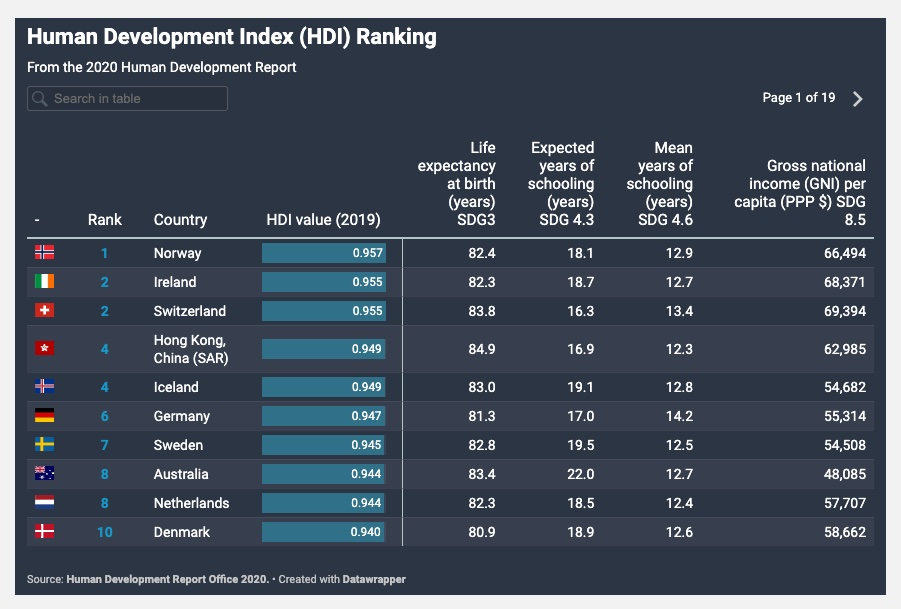

The United Nations Development Programme (UNDP) is a leading agency on international development that works in 170 countries to eradicate poverty and to reduce inequality.1 It helps countries to develop policies, leadership skills, partnering abilities, and institutional capabilities.2 Its work is concentrated in three focus areas: sustainable development, democratic governance and peace building, and climate and disaster resilience.3
One of the UNDP's work to deliver on its mission is to publish the annual Human Development Report (HDR). The Human Development Index (HDI) is a summary measure of average achievement in key dimensions of human development: a long and healthy life, being knowledgeable and having a decent standard of living.4 It was created based on the belief that people and their capabilities should be the ultimate criteria for assessing the development of a country, not economic growth alone.5 The HDI data can be used to question national policy choices and stimulate debate about government policy priorities.
The HDI data is widely used by the international community as a reference for the level of development in countries around the world.
While UNDP offers the entire data for download on their website, they do not offer any meaningful visualization of the data. They only make data available as a scrollable table on their website.
A table of the HDI data in the ascending order of HDI rank.
My final project is to create map projections with the HDI and other related data to drive a point that maps are better suited for this type of data.
Here is a map of the globe with the HDI data. Compared to the tabular presentation on the UNDP website, it makes immediately apparent where the countries with higher HDI are concentrated and vice versa.
Visualizing data like this as a map is also effective when you want to show relationships between two similar indicators.
Gender Inequality Index (GII) is another dataset that UNDP collects, monitor and reports on.6 By visualizing the GII as a map, one could see that it is almost a reverse of the HDI map.
Comparably, when the Internet Users data is presented as a map projection, the striking similarity with the HDI map is evident.
The Human Development Index is calculated from various indices, and we cannot prove correlation between the HDI and the internet users data by simply comparing the two maps. However, visualizing these datasets as maps is an easy way to show a possible link between the two datasets.